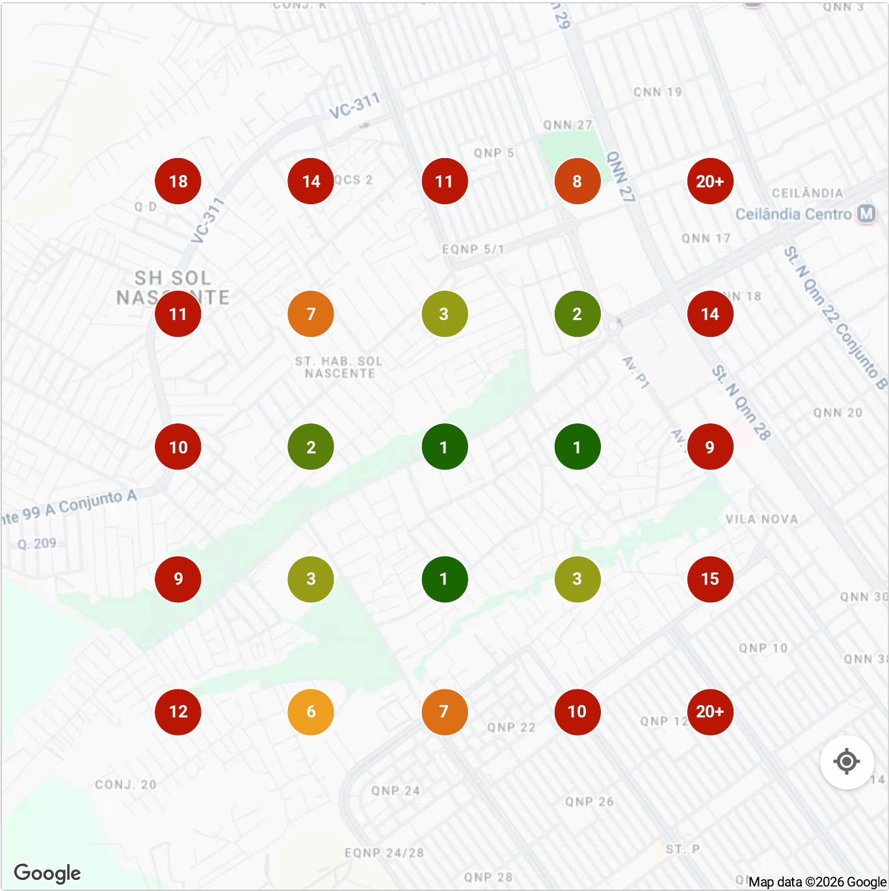

Esta carta chegou até vocês porque passamos um tempo estudando a presença digital da Achei Materiais para Construções e encontramos algo que nos chamou a atenção. A loja tem 103 avaliações no Google e presença em 23 dos 25 pontos que mapeamos ao redor da loja. Quem constrói isso numa região em que 109 lojas de material de construção aparecem na mesma busca do Google já fez a parte mais difícil.
Por isso, esta não é uma análise sobre o que está errado. É o contrário. Quando olhamos tudo o que a loja já construiu, ficamos com a impressão de que o nome dela no bairro é maior do que a quantidade de obras que chegam até o balcão hoje. Foi isso que nos fez querer aprofundar.
Olhamos também como a loja aparece quando alguém pesquisa "materiais de construção perto de mim" no Google Maps. Quem vai começar uma obra raramente escolhe a loja por uma rede social só. Ele vê um anúncio, pesquisa o nome no Google, lê as avaliações, chama no WhatsApp pedindo orçamento para duas ou três lojas e fecha com a que responde primeiro e entrega no prazo. Nosso olhar partiu exatamente desse caminho.
Antes de continuar, uma apresentação rápida.
Somos Murillo e Alex, sócios da Pillar, agência de marketing que trabalha só com lojas de material de construção. Usamos o Método Viga Mestra, que cobre cinco frentes: dados de estoque, domínio do raio de entrega, combos de produtos, atendimento de orçamento e fidelização da obra inteira. Foi olhando a loja por essas frentes que encontramos alguns pontos que gostaríamos de mostrar a vocês.
Esse foi o primeiro ponto que ficou evidente para nós. A Achei Materiais para Construções já possui a loja que mais aparece entre as 3 primeiras opções do Google Maps no entorno (32% dos pontos pesquisados), entre as 109 lojas mapeadas, com 103 avaliações. Isso vale muito.
Em material de construção, reputação não se mede em quantidade de post. Ela está em quem indica: o pedreiro que manda o cliente para o balcão, o vizinho que viu a obra andando e perguntou onde comprou o material. Essa rede existe e foi construída com atendimento, não com anúncio.
Mas, enquanto analisávamos, outra pergunta começou a nos incomodar.
Quanto dessa reputação está chegando a quem ainda não comprou aí?
A diferença entre ser lembrado por quem já passa na porta e ser a primeira opção de quem vai começar uma obra dentro do raio de entrega é grande. Anúncio com raio certo não serve para inflar número de seguidor. Serve para ocupar o território que a loja já conquistou, antes que o concorrente do bairro ao lado ocupe.
Se a Achei Materiais para Construções já é referência para quem a conhece, imagine o que acontece quando essa mesma presença começa a aparecer de forma constante para quem está a poucos quilômetros e ainda compra em outro lugar.
Aqui encontramos o segundo ponto que merece atenção. No dia 8 de outubro, pesquisamos "materiais de construção perto de mim" no Google Maps em 25 pontos ao redor da loja, num raio de 1 km. A Achei aparece entre as 3 primeiras opções em 32% deles, a maior fatia entre as 109 lojas mapeadas. Mas em 9 dos 25 pontos ela fica fora do top 10, principalmente na faixa norte do mapa, onde quase todos os pontos ficam entre o 11º e mais de 20º.
Quem vê um post pode estar só passando o tempo. Quem pesquisa "materiais de construção perto de mim" está com obra rolando, precisa de preço e quer saber quem entrega hoje. É por isso que a posição pesa: ele liga ou chama no WhatsApp da primeira loja que parecer confiável, e raramente desce até a sétima.
A loja lidera a região, mas ainda fica fora das 3 primeiras opções em 17 dos 25 pontos.

O mesmo raciocínio vale para o orçamento. Para quem está construindo ou reformando, o Google funciona como segunda confirmação: a loja entrega na minha rua? Tem o produto? Quem comprou ficou satisfeito? Foi aí que percebemos um sinal de espaço para crescer: a nota de 4,4 está abaixo de concorrentes que aparecem na mesma busca com 4,8 (13 avaliações) e 4,9 (51 avaliações). Com 103 avaliações, a loja já tem volume.
Quando alguém pesquisar materiais de construção perto de mim dentro do raio de entrega, qual loja essa pessoa vai perceber como a escolha mais óbvia?
Para nós, a oportunidade é maior do que melhorar um perfil. É fortalecer a associação entre:
Esta análise tem um limite. Nós enxergamos a vitrine: Instagram, anúncios, Google, avaliações. Mas existem perguntas que só dá para responder olhando por dentro da loja.
A loja não precisa começar do zero. Em vários pontos, já saiu na frente. Temos algumas ideias de como estruturar o próximo passo, mas faria mais sentido mostrar pessoalmente. Se fizer sentido para vocês, adoraríamos conversar.